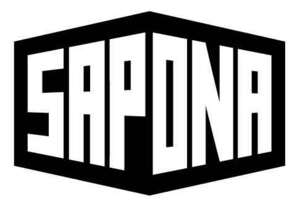

Trade Mark Journal No.2026/011 13 March 2026
UK00004344724 24 February 2026 (3)

- Class 3
- Abrasive boards for use on fingernails; After sun lotions; After sun moisturisers; Aftershave; Aftershave balm; Aftershave creams; After-shave gel; After-shave lotions; Aftershave milk; Aftershave moisturising cream; After-sun gels [cosmetics]; After-sun oils [cosmetics]; Age retardant gel; Age retardant lotion; Air (Canned pressurized -) for cleaning and dusting purposes; Air fragrancing preparations; Alcoholic solvents being cleaning preparations; Alkali (Volatile -) [ammonia] [detergent]; Almond milk for cosmetic purposes; Almond soap; Aloe vera preparations for cosmetic purposes; Anti-perspirant deodorants; Anti-perspirant preparations; Antiperspirant soap; Anti-perspirants; Aromatherapy pillows comprising potpourri in fabric containers; Aromatherapy preparations; Aromatic essential oils; Aromatic oils; Aromatic oils for the bath; Aromatic potpourris; Aromatics for fragrances; Artificial nails; Artificial nails for cosmetic purposes; Babies' creams [non-medicated]; Baby bath mousse; Baby body milks; Baby hair conditioner; Baby lotion; Baby oil; Baby oils; Baby powder; Baby shampoo; Baby shampoo mousse; Baby wipes; Badian essence; Balms (non-medicated-); Balms other than for medical purposes; Bark (Quillaia -) for washing; Barrier creams; Barrier creams for the skin; Base cream; Bath additives (non-medicated-); Bath bombs; Bath concentrates (non-medicated-); Bath creams (non-medicated-); Bath crystals; Bath crystals (non-medicated-); Bath foam; Bath foams (non-medicated-); Bath gel; Bath gels (non-medicated-); Bath herbs; Bath lotions (non-medicated-); Bath oil; Bath oils (non-medicated-); Bath pearls (non-medicated-); Bath powders (non-medicated-); Bath preparations (non-medicated-); Bath preparations, not medicated; Bath salts; Bath salts, not for medical purposes; Bath soap; Baths (Cosmetic preparations for -); Beard dyes; Beauty masks; Bergamot oil; Blushers; Body butter; Body cream; Body creams [cosmetics]; Body emulsions; Body masks; Body moisturisers; Body oil; Body oil spray; Body paint (cosmetic); Body powder; Body powder (non-medicated-); Body scrub; Body shampoos; Body sprays; Body sprays [non-medicated]; Body talcum powder; Boot cream; Boot polish; Breath freshener; Breath fresheners for animals; Breath freshening sprays; Breath freshening strips; Brightening chemicals (Color- [colour-] -) for household purposes [laundry]; Bronzing creams; Bubble bath; Abrasive boards for use on fingernails; Abrasive cloth; Adhesives for cosmetic purposes; After sun lotions; After sun moisturisers; Aftershave; Aftershave balm; Aftershave creams; After-shave gel; After-shave lotions; Aftershave milk; Aftershave moisturising cream; After-sun gels [cosmetics]; After-sun oils [cosmetics]; Age retardant gel; Age retardant lotion; Age spot reducing creams; Air (Canned pressurized -) for cleaning and dusting purposes; Air fragrancing preparations; Almond soap; Aloe vera preparations for cosmetic purposes; Anti-aging creams; Anti-freckle creams; Anti-perspirant deodorants; Anti-perspirant preparations; Antiperspirant soap; Anti-perspirants; Antiperspirants [toiletries]; Aromatherapy pillows comprising potpourri in fabric containers; Aromatherapy preparations; Aromatic essential oils; Aromatic oils for the bath; Aromatic potpourris; Aromatics [essential oils]; Aromatics for fragrances; Aromatics for perfumes; Artificial fingernails of precious metal; Artificial nails; Babies' creams [non-medicated]; Baby bath mousse; Baby body milks; Baby hair conditioner; Baby lotion; Baby oil; Baby oils; Baby powder; Baby shampoo; Baby shampoo mousse; Baby wipes; Badian essence; Balms (non-medicated-); Balms other than for medical purposes; Bark (Quillaia -) for washing; Barrier creams; Barrier creams for the skin; Base cream; Bath additives (non-medicated-); Bath bombs; Bath concentrates (non-medicated-); Bath creams (non-medicated-); Bath crystals; Bath crystals (non-medicated-); Bath foam; Bath foams (non-medicated-); Bath gel; Bath gels (non-medicated-); Bath herbs; Bath lotions (non-medicated-); Bath oil; Bath oils (non-medicated-); Bath pearls (non-medicated-); Bath powders (non-medicated-); Bath preparations (non-medicated-); Bath preparations, not medicated; Bath salts; Bath salts, not for medical purposes; Bath soap; Baths (Cosmetic preparations for -); Beard dyes; Beauty masks; Blushers; Body butter; Body cream; Body creams [cosmetics]; Body emulsions; Body glistener; Body masks; Body moisturisers; Body oil; Body oil spray; Body paint (cosmetic); Body powder; Body powder (non-medicated-); Body scrub; Body shampoos; Body sprays; Body sprays [non-medicated]; Body talcum powder; Boot cream; Boot polish; Breath freshener; Breath fresheners for animals; Breath freshening sprays; Breath freshening strips; Bubble bath; Cakes of toilet soap; Cologne; Combing oil; Conditioning balsam; Conditioning creams; Corundum [abrasive]; Cosmetic eye gels; Cosmetic eye pencils; Cosmetic kits; Cosmetic moisturisers; Cosmetic oils; Cosmetic powder; Cosmetic preparations; Cosmetic preparations for slimming purposes; Cosmetic preparations for use as aids to slimming; Cosmetic rouges; Cosmetics; Cosmetics for animals; Cosmetics for personal use; Cotton balls for cosmetic purposes; Cotton sticks for cosmetic purposes; Cotton swabs for cosmetic purposes; Cotton wool for cosmetic purposes; Cream cleaners (non-medicated-); Creams (Cosmetic -); Creams (non-medicated-) for the body; Creams (non-medicated-) for the eyes; Creams (Skin whitening -); Creams (soap-) for use in washing; Cushions filled with fragrant substances; Cushions filled with perfumed substances; Cushions impregnated with fragrant substances; Cushions impregnated with perfumed substances; Cuticle conditioners; Cuticle cream; Cuticle removers; Day creams; Dentifrices; Deodorant soap; Deodorants for human beings or for animals; Deodorants for pets; Deodorants for the feet; Detanglers; Detergent soap; Emery; Eye crayon; Eye cream; Eye gels; Eye make up remover; Eye make-up; Eye shadow; Eye shadows; Eye sticks; Eye stylers; Eye wrinkle lotions; Eyebrow cosmetics; Eyebrow pencils; Eyebrows [false]; Eyelash tint; Eyelashes; Eyelashes (Adhesives for affixing false -); Eyelashes (Cosmetic preparations for -); Eyelashes (False -); Eyelid shadow; Eyeliner pencils; Eyes pencils; Eyeshadow; Eye-shadow; Eyeshadows; Face blusher; Face cream (non-medicated-); Face creams; Face powder; Face powder (non-medicated-); Face scrubs (non-medicated-); Facial beauty masks; Facial cleansers; Facial cleansers [cosmetic]; Facial cream; Facial creams [cosmetic]; Facial lotions [cosmetic]; Facial makeup; Facial moisturisers [cosmetic]; Facial packs for toilet purposes; Facial scrubs; Facial scrubs [cosmetic]; Facial toners [cosmetic]; Facial washes [cosmetic]; Facial wipes impregnated with cosmetics; False eyelashes; False hair (Adhesives for affixing -); False nails; Feminine deodorant sprays; Fingernail decals; Fingernail overlay material; Fingernail sculpturing overlays; Fragrance preparations; Fragrances for personal use; Fragrant sachets; Hair balm; Hair bleach; Hair color; Hair color removers; Hair colorants; Hair colouring preparations; Hair cosmetics; Hair cream; Hair dyes; Hair emollients; Hair fixing oil; Hair gel; Hair lacquer; Hair lotions; Hair mascara; Hair moisturisers; Hair moisturising conditioners; Hair oil; Hair permanent wave kit; Hair protection creams; Hair protection gels; Hair protection lotions; Hair protection mousse; Hair relaxing preparations; Hair removing cream; Hair rinses [shampoo-conditioners]; Hair setting lotion; Hair spray; Hair straightening preparations; Hair strengthening treatment lotions; Hair texturizers; Hair thickeners; Hair tinting preparations; Hair tonic [non-medicated]; Hair waving preparations; Hair wax; Hairspray; Hand barrier creams; Hand cleaner; Hand cream; Hand lotion (non-medicated-); Hand oils (non-medicated-); Incense; Incense sachets; Linen (Sachets for perfuming -); Liners [cosmetics] for the eyes; Lint for cosmetic purposes; Lip balm; Lip balm [non-medicated]; Lip coatings [cosmetic]; Lip coatings (non-medicated-); Lip cream; Lip gloss; Lip glosses; Lip liner; Lip pencils; Lip protectors [cosmetic]; Lip protectors (non-medicated-); Lipsticks; Lotions for cosmetic purposes; Lotions (Tissues impregnated with cosmetic -); Make-up; Make-up crayons; Make-up pads of cotton wool; Make-up pencils; Make-up powder; Make-up preparations; Make-up removing milk; Make-up removing preparations; Mascara; Masks (Beauty -); Massage creams, not medicated; Massage gels other than for medical purposes; Massage oil; Massage oils, not medicated; Moist wipes impregnated with a cosmetic lotion; Moisturisers [cosmetics]; Moisturising body lotion [cosmetic]; Moisturising concentrates [cosmetic]; Moisturising gels [cosmetic]; Moisturising skin creams [cosmetic]; Moisturising skin lotions [cosmetic]; Moisturizing milk; Mould removing preparations; Mousses [cosmetics]; Mousses [toiletries] for use in styling the hair; Moustache wax; Mouth [breath] fresheners, not for medical use; Mouth sprays, not for medical use; Mouth washes; Mouth washes, not for medical purposes; Mouthwash; Musk [perfumery]; Mustache wax; Nail art stickers; Nail base coat [cosmetics]; Nail care preparations; Nail cream; Nail enamel; Nail gel; Nail glitter; Nail hardeners; Nail hardeners [cosmetics]; Nail polish; Nail polish remover; Nail polish removers [cosmetics]; Nail tips [cosmetics]; Nail varnish; Nail varnish remover [cosmetics]; Nail varnish removing preparations; Nails (False -); Nappy cream [non-medicated]; Natural floor glazes; Natural floor polishes; Natural floor sealers; Natural floor waxes; Natural oils for cleaning purposes; Natural oils for cosmetic purposes; Natural oils for perfumes; Neutralizers for permanent waving; Neutralizing hair preparations; Night cream; Night creams [cosmetics]; Non medicated skin toners; Non-medicated bath oils; Non-medicated bath salts; Non-medicated beauty preparations; Non-medicated cleansing creams; Non-medicated cosmetics; Non-medicated creams; Non-medicated dentifrices; Non-medicated foot cream; Non-medicated hair lotions; Non-medicated hair shampoos; Non-medicated lotions; Non-medicated moisturisers; Non-medicated mouth rinse; Non-medicated mouth sprays; Non-medicated oils; Non-medicated scalp treatment cream; Non-medicated shampoos; Non-medicated skin care preparations; Non-medicated skin clarifying lotions; Non-medicated skin lotions; Non-medicated soaps; Non-medicated toilet soaps; Non-medicated toiletries; Non-slipping liquids for floors; Non-slipping wax for floors; Nutritional creams (non-medicated-); Oil of turpentine for degreasing; Oils for cleaning purposes; Oils for cosmetic purposes; Oils for perfumes and scents; Oils for the body [cosmetics]; Oils for toilet purposes; Ointments for cosmetic use; Pedicure preparations; Pencils (Cosmetic -); Pencils (Eyebrow -); Pencils for cosmetic use; Perfume oils; Perfume water; Perfumed body lotions [toilet preparations]; Perfumed lotions [toilet preparations]; Perfumed potpourris; Perfumed powder; Perfumed sachets; Perfumed soap; Perfumed talcum powder; Perfumed tissues; Perfumed toilet waters; Perfumed water; Perfumery; Perfumery, essential oils, cosmetics, hair lotions; Perfumes; Pomanders [aromatic substances]; Potpourris [fragrances]; Powder compact refills [cosmetics]; Powder compacts [cosmetics]; Powder (Make-up -); Pre-moistened cosmetic tissues; Pre-moistened cosmetic towelettes; Pre-moistened cosmetic wipes; Preparations for permanent hair waves; Preparations for reinforcing the nails; Preparations for setting hair; Prepared wax for polishing; Preservative creams for leather; Preservatives for leather [polishes]; Pre-shave gels; Pre-shaving preparations; Pressed face powder; Pumice stone; Pumice stones for personal use; Pumice stones for use on the body; Roll-on deodorants [toiletries]; Room fragrances; Room fragrancing preparations; Rose oil for cosmetic purposes; Sachets for perfuming linen; Scented linen sprays; Scented oils; Scented pine cones; Scented sachets; Scented toilet waters; Scented water; Scented wood; Scents; Self tanning creams [cosmetic]; Self tanning lotions [cosmetic]; Self-tanning preparations [cosmetics]; Shampoo for animals; Shampoo-conditioners; Shampoos; Shampoos for personal use; Shampoos for pets; Shampoos for vehicles; Sharpening preparations; Shaving balm; Shaving foam; Shaving gel; Shaving lotion; Shaving mousse; Shaving preparations; Shaving preparations in liquid form; Shaving soap; Shaving sprays; Shaving sticks [preparations]; Shaving stones; Shaving stones [astringents]; Shower creams; Shower foams; Shower gel; Silicon carbide [abrasive]; Skin balms [cosmetic]; Skin balms (non-medicated-); Skin care (Cosmetic preparations for -); Skin care creams [cosmetic]; Skin care creams, other than for medical use; Skin care lotions [cosmetic]; Skin care oils [non-medicated]; Skin cleaners [non-medicated]; Skin cleansers [cosmetic]; Skin cleansers [non-medicated]; Skin cleansing cream; Skin cleansing cream [non-medicated]; Skin cleansing lotion; Skin conditioners; Skin cream; Skin creams [cosmetic]; Skin creams [non-medicated]; Skin emollients; Skin emollients [non-medicated]; Skin foundation; Skin fresheners; Skin lighteners; Skin lightening compositions [cosmetic]; Skin lotion; Skin make-up; Skin masks [cosmetics]; Skin moisturizer masks; Skin moisturizers; Skin toners; Skin tonics [non-medicated]; Skin whitening creams; Skin whitening preparations; Skin whitening preparations [cosmetic]; Soap; Soap (Antiperspirant -); Soap (Deodorant -); Soap for brightening textile; Soap for foot perspiration; Soap pads; Soap powder; Soap solutions; Soaps; Soaps in liquid form; Styling mousse; Sun barriers [cosmetics]; Sun block [cosmetics]; Sun blocking lipsticks [cosmetics]; Sun blocking preparations [cosmetics]; Sun bronzers; Sun creams; Sun protecting creams [cosmetics]; Sun screen; Sun tan gel; Sun tan lotion; Sun tan oil; Suntan lotion [cosmetics]; Suntan oils [cosmetics]; Suntanning oil [cosmetics]; Sun-tanning preparations [cosmetics]; Swabs [toiletries]; Synthetic perfumery; Talc; Talc [toiletries]; Talcum powder; Talcum powder, for toilet use; Talcum powder (non-medicated-) for babies; Tanning gels [cosmetics]; Tanning oils [cosmetics]; Temporary tattoo's for cosmetic purposes; Tissues impregnated with cosmetic lotions; Toiletries; Tonics [cosmetic]; Toning creams [cosmetic].
SAPONA Limited